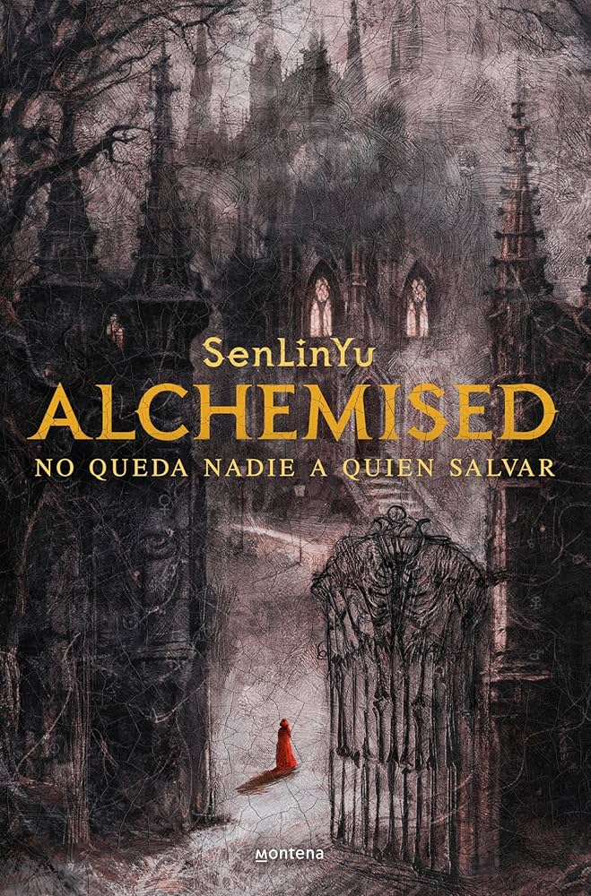
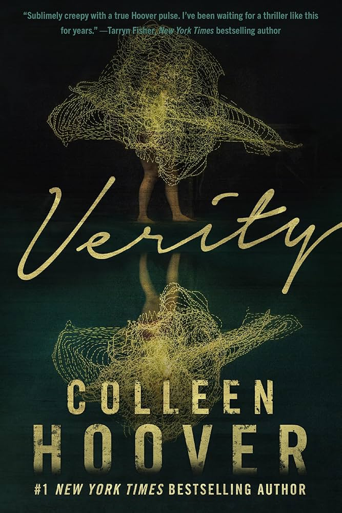
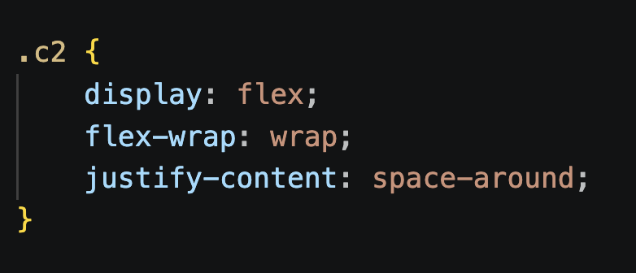
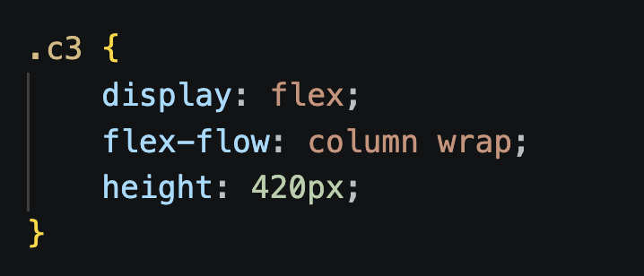
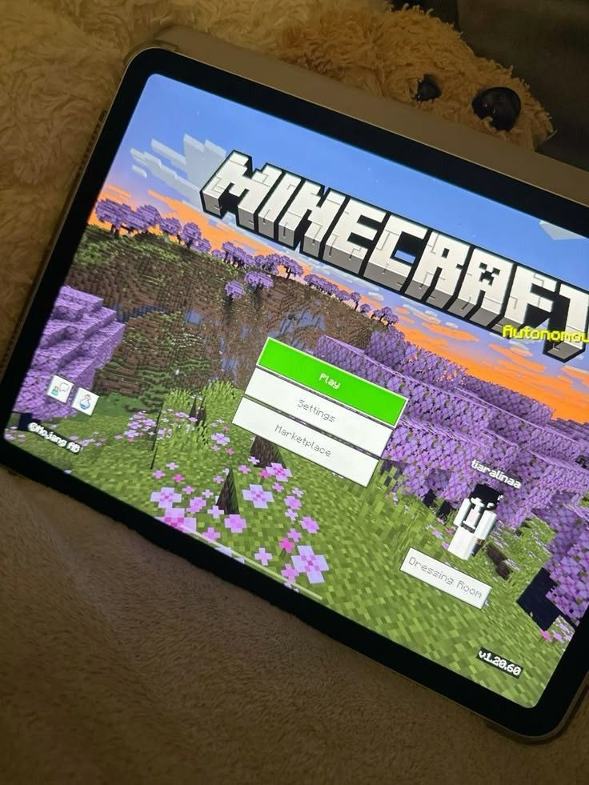
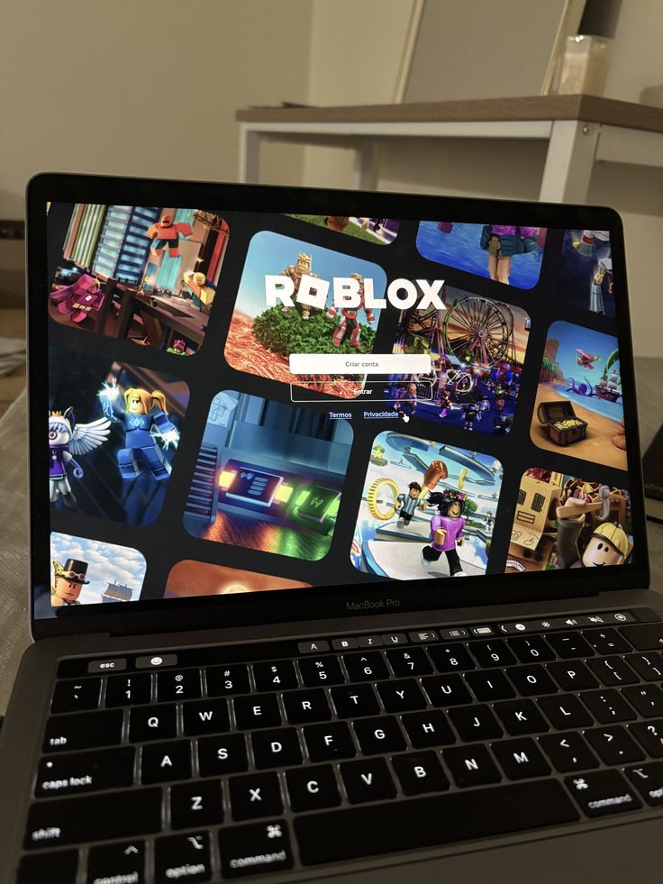
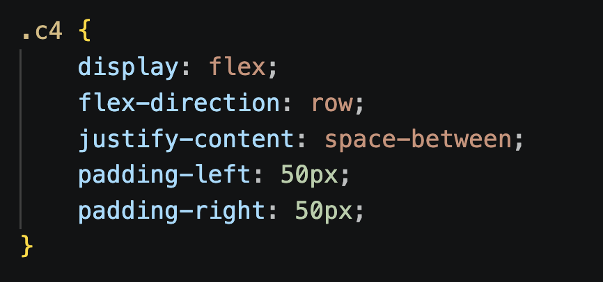

LECTURA

Este pasatiempo recientemente
lo desarrollé a finales
de octubre del año 2025
Este pasatiempo recientemente
lo desarrollé a finales
de octubre del año 2025

Es uno de mis pasatiempos
favoritos, porque hago casi
todo con música.

Este pasatiempo me encanta
realizarlo con amigos

Es otro de mis pasatiempos
favoritos, porque la mayoría
de mi tiempo libre suelo
ver videos
En estas Cajas Flexibles muestro mis 4 Pasatiempos.
Utilizo --> justify-content: space-evenly


Una joven con poderes relacionados con
la alquimia es capturada por un imperio
y obligada a usar sus habilidades
para sus enemigos, mientras intenta
recuperar sus recuerdos y descubrir
la verdad sobre su pasado.

Una escritora acepta terminar la serie de
libros de una autora famosa
que quedó incapacitada. Mientras
revisa sus notas, encuentra un
manuscrito secreto que revela cosas
muy oscuras sobre su vida.

Después de que su novio muere
inesperadamente,una chica lo llama para
escuchar su buzón… pero él responde.
A través de esas llamadas, ambos
enfrentan el dolor de despedirse.

Una chica despierta sin memoria y
un hombre afirma ser su padre.
Mientras intenta descubrir quién
es realmente, otra historia sigue a
un chico que busca a su novia desaparecida.
En estas Cajas Flexibles muestro mis 4 libros favoritos que he leido en 2025-2026.
Utilizo --> flex-wrap: wrap | justify-content: space-around


Canciones favs:

Canciones favs:

Canciones favs:
En estas Cajas Flexibles muestro mis 3 cantantes favoritos.
Utilizo --> flex-flow: column wrap


Un videojuego de mundo abierto donde los jugadores pueden construir, explorar y sobrevivir en un mundo formado por bloques. Permite recolectar recursos, crear herramientas y jugar en diferentes modos como supervivencia o creativo.

Una plataforma de videojuegos en línea donde los usuarios pueden crear sus propios juegos y experiencias usando herramientas de desarrollo. También permite jugar millones de juegos creados por otros jugadores y socializar con personas de todo el mundo.
En estas Cajas Flexibles muestro mis 3 cantantes favoritos.
Utilizo --> justify-content: space-between | flex-direction: row
